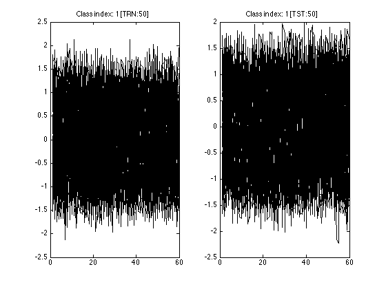
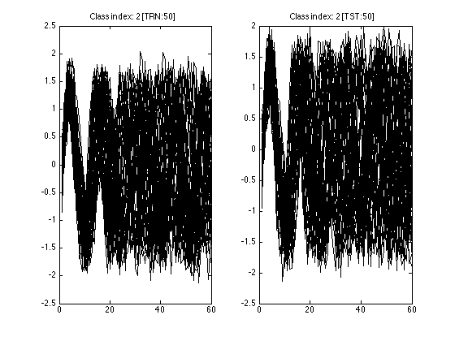
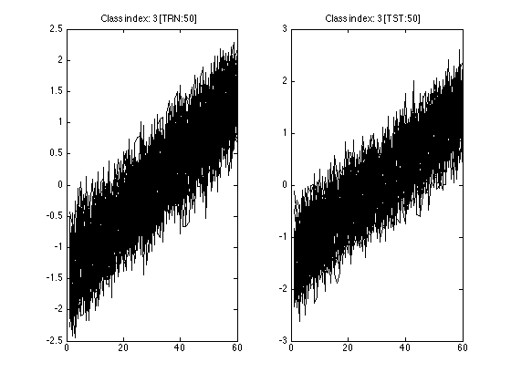
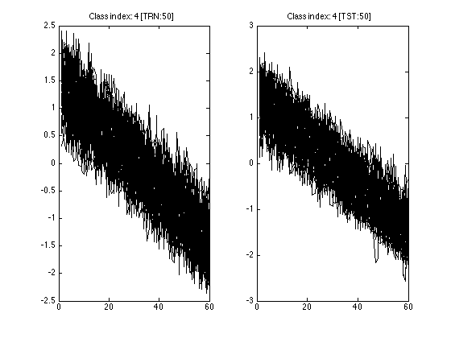
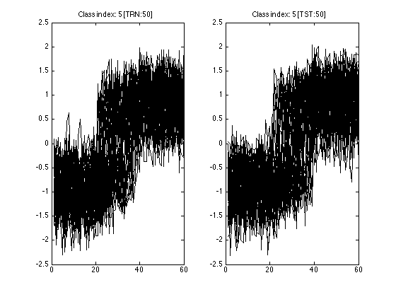
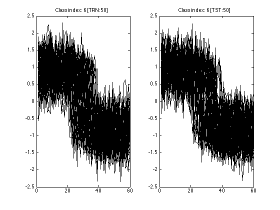

TSCU test suite: 10
In this test, we use Synthetic Control dataset provided in UCI Machine Learning Repository but I use the one on UCR time series repository (http://www.cs.ucr.edu/~eamonn/time_series_data) since the format is suitable for TSCU.
In this test, I don't use any alignment algorithm but NONE which means standard Euclidean distance is used. The classification accuracy of this approach is 88\%. It matches the accuracy given on UCR time series repository web page.
- Author : Huseyin Kaya
- Website: http://timewarping.org
- Sources: https://github.com/hkayabilisim/TSCU
Contents
Initialization
As always, I begin with clearing everything to stay out of any nonsense.
clear all close all clc
Loading data
I load synthetic control dataset. In may setup they are in the folder '../../UCR/'. You should change this folder fitting your needs.
trn=load('../../UCR/synthetic_control/synthetic_control_TRAIN'); tst=load('../../UCR/synthetic_control/synthetic_control_TEST');
Running without alignment
You don't have to use an alignment method to classify time series as in this example. You simply set Alignment to NONE which in turn uses standard Euclidean distance. I also use DisplayInputData to see the synthetic control dataset.
tscu(trn,tst,'Alignment','NONE','DisplayInputData','yes');
Size of training set.....................: 300
Size of testing set......................: 300
Time series length.......................: 60
Classification method....................: K-NN
Alignment method.........................: NONE
Displaying input data....................: yes
No cross validation is chosen............: 0
Displaying alignments....................: none
Dumping distance matrix..................: no
Class information........................: 1 [TRN: 50 TST: 50]
Class information........................: 2 [TRN: 50 TST: 50]
Class information........................: 3 [TRN: 50 TST: 50]
Class information........................: 4 [TRN: 50 TST: 50]
Class information........................: 5 [TRN: 50 TST: 50]
Class information........................: 6 [TRN: 50 TST: 50]
index of testing objects.................: 1 2 3 4 5 6 7 8 9 10 11 12 13 14 15 16 17 18 19 20 21 22 23 24 25 26 27 28 29 30 31 32 33 34 35 36 37 38 39 40 41 42 43 44 45 46 47 48 49 50 51 52 53 54 55 56 57 58 59 60 61 62 63 64 65 66 67 68 69 70 71 72 73 74 75 76 77 78 79 80 81 82 83 84 85 86 87 88 89 90 91 92 93 94 95 96 97 98 99 100 101 102 103 104 105 106 107 108 109 110 111 112 113 114 115 116 117 118 119 120 121 122 123 124 125 126 127 128 129 130 131 132 133 134 135 136 137 138 139 140 141 142 143 144 145 146 147 148 149 150 151 152 153 154 155 156 157 158 159 160 161 162 163 164 165 166 167 168 169 170 171 172 173 174 175 176 177 178 179 180 181 182 183 184 185 186 187 188 189 190 191 192 193 194 195 196 197 198 199 200 201 202 203 204 205 206 207 208 209 210 211 212 213 214 215 216 217 218 219 220 221 222 223 224 225 226 227 228 229 230 231 232 233 234 235 236 237 238 239 240 241 242 243 244 245 246 247 248 249 250 251 252 253 254 255 256 257 258 259 260 261 262 263 264 265 266 267 268 269 270 271 272 273 274 275 276 277 278 279 280 281 282 283 284 285 286 287 288 289 290 291 292 293 294 295 296 297 298 299 300
labels of testing objects (True).........: 1 1 1 1 1 1 1 1 1 1 1 1 1 1 1 1 1 1 1 1 1 1 1 1 1 1 1 1 1 1 1 1 1 1 1 1 1 1 1 1 1 1 1 1 1 1 1 1 1 1 2 2 2 2 2 2 2 2 2 2 2 2 2 2 2 2 2 2 2 2 2 2 2 2 2 2 2 2 2 2 2 2 2 2 2 2 2 2 2 2 2 2 2 2 2 2 2 2 2 2 3 3 3 3 3 3 3 3 3 3 3 3 3 3 3 3 3 3 3 3 3 3 3 3 3 3 3 3 3 3 3 3 3 3 3 3 3 3 3 3 3 3 3 3 3 3 3 3 3 3 4 4 4 4 4 4 4 4 4 4 4 4 4 4 4 4 4 4 4 4 4 4 4 4 4 4 4 4 4 4 4 4 4 4 4 4 4 4 4 4 4 4 4 4 4 4 4 4 4 4 5 5 5 5 5 5 5 5 5 5 5 5 5 5 5 5 5 5 5 5 5 5 5 5 5 5 5 5 5 5 5 5 5 5 5 5 5 5 5 5 5 5 5 5 5 5 5 5 5 5 6 6 6 6 6 6 6 6 6 6 6 6 6 6 6 6 6 6 6 6 6 6 6 6 6 6 6 6 6 6 6 6 6 6 6 6 6 6 6 6 6 6 6 6 6 6 6 6 6 6
labels of testing objects (Estimated)....: 1 1 2 1 1 3 2 6 2 1 1 6 1 1 1 1 4 1 1 2 4 4 5 6 2 1 1 4 1 5 2 1 6 2 3 1 5 2 5 3 1 1 2 6 1 2 6 5 1 1 2 2 2 2 2 2 2 2 2 2 2 2 2 2 2 2 2 2 2 2 2 2 2 2 2 2 2 2 2 2 2 2 2 2 2 2 2 2 2 2 2 2 2 2 2 2 2 2 2 2 3 3 3 3 3 3 3 3 3 3 3 3 3 3 3 3 3 3 3 3 3 3 3 3 3 3 3 3 3 3 3 3 3 3 3 3 3 3 3 3 3 3 3 3 5 3 3 3 3 3 4 4 4 4 4 4 4 4 4 4 4 4 4 4 4 4 4 4 4 4 4 4 4 4 4 4 4 4 4 4 4 4 4 4 4 4 4 4 4 4 4 4 4 4 4 4 4 4 4 4 5 5 5 5 5 5 5 5 5 5 5 5 5 5 5 5 5 5 5 5 5 5 5 5 5 5 5 5 5 5 5 5 5 3 5 5 5 5 3 3 5 5 5 5 5 5 5 5 5 5 6 6 6 6 6 6 6 6 6 6 6 6 6 6 6 6 6 6 6 6 6 6 6 6 6 6 6 6 4 6 6 6 4 6 6 6 6 6 6 6 6 6 6 6 6 6 6 4 4 6
closest training objects.................: 24 23 81 45 49 114 68 290 96 37 35 299 11 19 14 8 168 47 44 97 199 199 231 276 100 30 38 173 28 214 100 39 273 98 132 34 221 54 237 134 8 20 73 289 29 100 254 226 40 14 72 59 85 56 78 67 79 78 65 95 78 96 96 54 82 88 60 66 73 96 78 95 71 65 99 74 72 89 93 86 62 91 96 78 71 76 51 60 78 56 78 87 71 65 94 79 94 78 79 75 134 134 127 117 105 122 102 119 122 102 115 117 102 113 148 117 104 122 131 127 117 117 117 125 118 134 117 105 131 127 147 102 131 125 107 117 117 120 131 115 134 122 102 130 223 147 104 141 136 131 162 161 161 172 151 180 156 151 161 157 162 157 157 162 172 172 157 157 180 162 168 195 162 191 157 161 172 151 161 157 182 184 184 151 197 151 196 200 196 195 197 151 172 184 197 172 180 157 162 168 241 242 204 207 238 227 237 202 204 236 237 249 228 217 239 248 249 228 244 248 228 207 229 204 207 248 208 207 221 228 227 242 219 150 204 241 241 202 115 126 227 207 219 239 207 239 208 217 248 237 277 300 286 251 275 286 264 275 297 251 296 258 283 282 272 263 296 270 274 298 258 275 251 258 294 263 270 285 198 257 255 258 162 296 286 270 296 283 272 298 286 283 300 283 283 292 298 173 158 264
Overall Accuracy.........................: 0.880
Overall Error............................: 0.120
Producer Accuracy........................: 0.440 1.000 0.980 1.000 0.940 0.920
User Accuracy............................: 1.000 0.833 0.891 0.862 0.887 0.885
Kappa....................................: 0.856
Z-value..................................: 5.439
Confusion matrix.........................:
Confusion matrix
1 2 3 4 5 6 UA TO
1 22 0 0 0 0 0 1.000 22
2 10 50 0 0 0 0 0.833 60
3 3 0 49 0 3 0 0.891 55
4 4 0 0 50 0 4 0.862 58
5 5 0 1 0 47 0 0.887 53
6 6 0 0 0 0 46 0.885 52
PA 0.440 1.000 0.980 1.000 0.940 0.920
TO 50 50 50 50 50 50 300
Classification time (sec)................: 11.10
The end of TSCU..........................: FINISHED
     